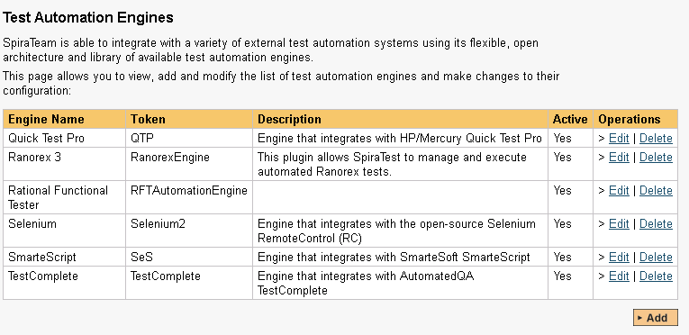
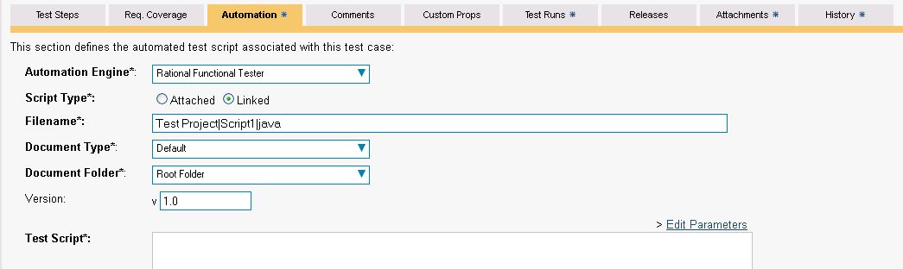

Rational Functional Tester¶
IBM Rational Functional Tester (hereafter RFT) is software test automation tool used by quality assurance teams to perform automated regression testing. Testers create scripts by using a test recorder which captures a user's actions against their application under test. The recording mechanism creates a test script from the actions. The test script is produced as either a Java or Visual Basic.net application.
This section describes how you can use SpiraTest / SpiraTeam (hereafter SpiraTeam) together with RemoteLaunch to schedule and remotely launch instances of RFT on different computers and have the testing results be transmitted back to SpiraTeam. This allows you to extend your SpiraTeam's test management capabilities to include automated RFT tests.
Note: This integration requires at least version 3.0 of SpiraTest/Team.
Installing the RFT Engine¶
This section assumes that you already have a working installation of SpiraTest or SpiraTeam and have installed RemoteLaunch on the various test automation hosts following the instructions in RemoteLaunch Guide. Once those prerequisites are in place, please follow these steps:
-
Download and extract the RFTEngine.zip file from the Inflectra website and locate the appropriate RFTAutomationEngine.dll for the version of RFT that you are using.
-
If you don't see the version listed, just use the nearest version that is lower than your current version.
-
Copy the file "RFTAutomationEngine.dll" into the "extensions" sub-folder of the RemoteLaunch installation.
-
Log in to SpiraTeam as a system administrator and go into SpiraTeam main Administration page and click on the "Test Automation" link under Integration.
-
Click the "Add" button to enter the new test automation engine details page. The fields required are as follows:

-
Name: This is the short display name of the automation engine. It can be anything that is meaningful to your users.
-
Description: This is the long description of the automation engine. It can be anything that is meaningful to your users. (Optional)
-
Active: If checked, the engine is active and able to be used for any project.
-
Token: This needs to be the assigned unique token for the automation engine and is used to tell RemoteLaunch which engine to actually use for a given test case. For RFT this should always be RFTAutomationEngine.
-
Once you have finished, click the "Insert & Close" button and you will be taken back to the Test Automation list page, with RFT listed as an available automation engine.

Advanced Settings¶
You can modify the RFT configuration for each of the specific automation hosts, by right-clicking on the RemoteLaunch icon in the system tray and choosing "Configuration". That will bring up the RemoteLaunch configuration page.
The RFT engine adds its own tab to this page which allows you to configure how RFT operates:

The following fields can be specified on this screen:
RFT Location -- this is where the installation of RFT can be found. Typically it's C:\Program Files\IBM\SDP\FunctionalTester\bin
Workspace Location -- This is the folder where the RFT test scripts and generated log files will be stored. The currently logged-in user needs to have Read/Write permissions over this folder. Typically it's:
C:\Documents and Settings\[User Name]\IBM\rationalsdp\workspace on a Windows XP workstation or Windows 2003 server.
C:\Users\[User Name]\IBM\rationalsdp\workspace on a Windows Vista, 7, 2008 or 2008 R2 computer.
Trace Logging -- When selected, this will log additional trace and debugging information to the Windows Event Log. This should not be selected in a production environment.
Setting up the Automated Test Cases¶
This section describes the process for setting up a test case in SpiraTeam for automation and linking it to an automated RFT test script.
First you need to display the list of test cases in SpiraTeam (by clicking Testing > Test Cases) and then add a new test case. Once you have added the new test case, click on it and select the "Automation" tab:

You need to enter the following fields:
-
Automation Engine - Choose the RFT Automation Engine that you created in the previous section from the drop-down list.
-
Script Type -- This should be set to Linked as the integration with RFT only supports referencing RFT test script files and not physically uploading the test scripts into SpiraTeam.
-
Filename -- This needs to consist of the following three components separated by a pipe (|) character (see the screenshot for an example):
-
The name of the RFT project that the test is mapped to
-
The name of the RFT script in the project that the test is mapped to
-
Either "java" or "net" depending on whether you have a Java or .NET test script
-
-
Document Type -- This allows you to choose which document type the automated test script will be categorized under.
-
Document Folder --This allows you to choose which document folder the automated test script will be stored in.
-
Version -- The version of the test script (1.0 is used if no value specified)
-
Test Script -- This is not used with the RFT Engine since it only supports linked test scripts.
Once you are happy with the values, click [Save] to update the test case. Now you are ready to schedule the automated test case for execution.
Using Parameterized Test Cases¶
There is an advanced feature of SpiraTest/Team and RemoteLaunch that lets you pass parameters from SpiraTeam to your RFT automated test suite. This is very useful if you have a data-driven RFT test suite that defines input variables from an external data source.
To setup the automated test case for parameters, click on the "Test Steps" tab and click on "Edit Parameters":

The name of the parameter ${login} is actually not used when passing the data to RFT, only the values are passed. Therefore it's important that the parameters are stored in the order they are expected by your RFT test script.
Executing the RFT Test Sets from SpiraTeam¶
There are two ways to execute automated test cases in SpiraTeam:
-
Schedule the test cases to be executed on a specific computer (local or remote) at a date/time in the future
-
Execute the test cases right now on the local computer.
We shall outline both of these two scenarios in this section. However first we need to setup the appropriate automation hosts and test sets in SpiraTeam:
Configuring the Automation Hosts and Test Sets¶
Go to Testing > Automation Hosts in SpiraTeam to display the list of automation hosts:

Make sure that you have created an Automation Host for each computer that is going to run an automated test case. The name and description can be set to anything meaningful, but the Token field must be set to the same token that is specified in the RemoteLaunch application on that specific machine.
Once you have at least one Automation Host configured, go to Testing > Test Sets to create the test sets that will contain the automated test case:

Note: Unlike manual test cases, automated test cases must be executed within a test set -- they cannot be executed directly from the test case.
Create a new Test Set to hold the RFT automated test cases and click on its hyperlink to display the test set details page:
You need to add at least one automated test case to the test set and then configure the following fields:
-
Automation Host -- This needs to be set to the name of the automation host that will be running the automated test set.
-
Planned Date -- The date and time that you want the scenario to begin. (Note that multiple test sets scheduled at the exact same time will be scheduled by Test Set ID order.)
-
Status -- This needs to be set to "Not Started" for RemoteLaunch to pick up the scheduled test set. When you change the Planned Date, the status automatically switches back to "Not Started"
-
Type -- This needs to be set to "Automated" for automated testing
If you have parameterized test cases inside the automated test set you need to set their values by right-clicking on the test case and choosing "Edit Parameters":

Enter the parameter values and click "Update" to commit the change. This allows you to have the same test case in the test set multiple times with different data for each instance.
Executing the Test Sets¶
Once you have set the various test set fields (as described above), the Remote Launch instances will periodically poll SpiraTeam for new test sets. Once they retrieve the new test set, they will add it to their list of test sets to execute. Once execution begins they will change the status of the test set to "In Progress", and once test execution is done, the status of the test set will change to either "Completed" -- the automation engine could be launched and the test has completed -- or "Blocked" -- RemoteLaunch was not able to start the automation engine.
If you want to immediately execute the test case on your local computer, instead of setting the "Automation Host", "Status" and "Planned Date" fields, you can instead click the [Execute] icon on the test set itself. This will cause RemoteLaunch on the local computer to immediately start executing the current test set.
In either case, once all the test cases in the test set have been completed, the status of the test set will switch to "Completed" and the individual test cases in the set will display a status based on the results of the RFT test:
Passed -- The RFT automated test ran successfully and all the test steps in the test script passed and no assertions were thrown.
Failed -- The RFT automated test ran successfully, but at least one test step failed or at least one assertion failed.
Caution -- The RFT automated test run successfully, but at least one warning was logged in one of the test steps.
Blocked -- The RFT automated test did not run successfully.
If you receive the "Blocked" status for either the test set or the test cases you should open up the Windows Application Event Log on the computer running RemoteLaunch and look in the event log for error messages.
Note: While the tests are executing you will see browser windows launch as RFT executes the appropriate tests.
Once the tests have completed, you can log back into SpiraTeam and see the execution status of your test cases. If you click on a Test Run that was generated by RFT, you will see the following information:

This screen indicates the status of the test run that was reported back from RFT together with any messages or other information. The Test Name indicates the name of the test inside RFT and the execution status corresponds the matching status inside RFT as illustrated below:
| RFT Status | SpiraTeam Status |
|---|---|
| PASS | Passed |
| FAIL | Failed |
| WARNING | Caution |
In addition, the detailed test report from RFT is available in the large text-box below. It will contain messages such as:
07-Nov-2011 03:00:05.004 PM: Script Start - INFORMATION - Script
start [Script1]07-Nov-2011 03:00:05.035 PM: Simplified Script Group - INFORMATION -
firefox.exe: self improvement - QuickStart Tutorials for Rational
Functional Tester (RFT) - Stack Overflow - Mozilla Firefox07-Nov-2011 03:00:05.035 PM: Timer Start - INFORMATION - Start timer: firefoxexeselfimprovementQuickSta_1
07-Nov-2011 03:00:25.535 PM: General - WARNING - Object Recognition
is weak (above the warning threshold)07-Nov-2011 03:00:49.488 PM: General - FAIL - Script1.testMain had an unhandled exception.
07-Nov-2011 03:00:49.488 PM: Script End - FAIL - Script end
[Script1]Exception occurred during playback of script [Script1]
[CRFCN0019E: RationalTestScriptException on line 49 of script
Script1 - com.rational.test.ft.ObjectNotFoundException: CRFCN0661W:
The recognition score of the found object does not qualify the object as a match.Looking for [GuiSubitemTestObject(Name: goToAWebSitetext, Map:
GoToAWebSite)], best failing candidate score was [22500] with best failing description [{.class=.Text, .name=Go to a Web Site,
.classIndex=0}].].
Congratulations... You are now able to run RFT automated functional tests and have the results be recorded within SpiraTest / SpiraTeam.